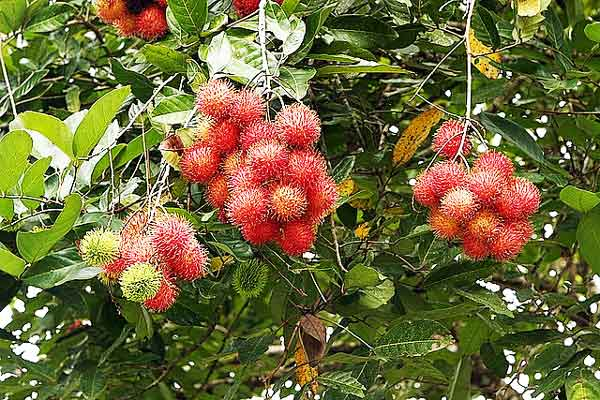
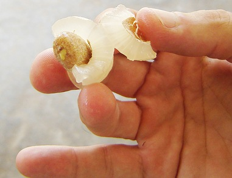

| Rambutan grows on trees in Malaysia and Indonesia, typically in clumps of 10 to 20 per branch. Each of the fruits have tiny stems that they grow out, and you can tell that they are ripe when their spikes start to develop. |
|---|
|  |
| Rambutan seeds are also technically poisonous, but not enough to cause any preminent harm to anyone when eaten in small doses. The seeds are also very easy to crack into and many people don't mind eating the shell of the seed, because it is a hastle to get off the fruit. |
|  |
Link back: Here